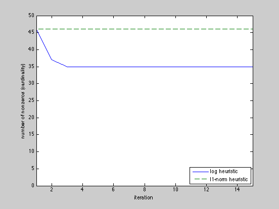

Computing a sparse solution of a set of linear inequalities
seed = 0;
randn('state',seed);
rand('state',seed);
delta = 1e-8;
m = 100;
n = 50;
A = randn(m,n);
x0 = randn(n,1);
b = A*x0 + rand(m,1);
fprintf(1, 'Finding a sparse feasible point using l1-norm heuristic ...')
cvx_begin
variable x_l1(n)
minimize( norm( x_l1, 1 ) )
subject to
A*x_l1 <= b;
cvx_end
nnz = length(find( abs(x_l1) > delta ));
fprintf(1,['\nFound a feasible x in R^%d that has %d nonzeros ' ...
'using the l1-norm heuristic.\n'],n,nnz);
NUM_RUNS = 15;
nnzs = [];
W = ones(n,1);
disp([char(10) 'Log-based heuristic:']);
cvx_quiet(true);
for k = 1:NUM_RUNS
cvx_begin
variable x_log(n)
minimize( sum( W.*abs(x_log) ) )
subject to
A*x_log <= b;
cvx_end
nnz = length(find( abs(x_log) > delta ));
nnzs = [nnzs nnz];
fprintf(1,' found a solution with %d nonzeros...\n', nnz);
W = 1./(delta + abs(x_log));
end
cvx_quiet(false);
nnz = length(find( abs(x_log) > delta ));
fprintf(1,['\nFound a feasible x in R^%d that has %d nonzeros ' ...
'using the log heuristic.\n'],n,nnz);
plot(1:NUM_RUNS, nnzs, [1 NUM_RUNS],[nnzs(1) nnzs(1)],'--');
axis([1 NUM_RUNS 0 n])
xlabel('iteration'), ylabel('number of nonzeros (cardinality)');
legend('log heuristic','l1-norm heuristic','Location','SouthEast')
Finding a sparse feasible point using l1-norm heuristic ...
Calling SDPT3: 200 variables, 100 equality constraints
------------------------------------------------------------
num. of constraints = 100
dim. of socp var = 100, num. of socp blk = 50
dim. of linear var = 100
*******************************************************************
SDPT3: homogeneous self-dual path-following algorithms
*******************************************************************
version predcorr gam expon
NT 1 0.000 1
it pstep dstep p_infeas d_infeas gap mean(obj) cputime
-------------------------------------------------------------------
0 0.000 0.000 3.4e+00 5.0e+00 1.5e+02 2.500000e+01 0:0:00 chol 1 1
1 0.370 0.370 3.2e+00 4.7e+00 2.0e+02 4.244428e+01 0:0:00 chol 1 1
2 0.906 0.906 1.1e+00 1.7e+00 1.0e+02 4.124336e+01 0:0:00 chol 1 1
3 0.883 0.883 2.1e-01 3.1e-01 1.8e+01 3.803271e+01 0:0:00 chol 1 1
4 0.730 0.730 1.2e-01 1.8e-01 1.1e+01 3.606939e+01 0:0:00 chol 1 1
5 0.915 0.915 3.2e-02 4.6e-02 3.0e+00 3.597417e+01 0:0:00 chol 1 1
6 0.762 0.762 1.6e-02 2.3e-02 1.5e+00 3.597177e+01 0:0:00 chol 1 1
7 0.924 0.924 3.9e-03 5.7e-03 3.6e-01 3.594840e+01 0:0:00 chol 1 1
8 0.740 0.740 1.8e-03 2.6e-03 1.7e-01 3.594553e+01 0:0:00 chol 1 1
9 1.000 1.000 6.3e-04 9.2e-04 5.9e-02 3.594317e+01 0:0:00 chol 1 1
10 0.756 0.756 2.0e-04 2.9e-04 1.8e-02 3.594176e+01 0:0:00 chol 1 1
11 1.000 1.000 8.0e-05 1.2e-04 7.5e-03 3.594101e+01 0:0:00 chol 1 1
12 0.809 0.809 1.6e-05 2.3e-05 1.5e-03 3.594082e+01 0:0:01 chol 1 1
13 0.975 0.975 4.7e-06 6.9e-06 4.4e-04 3.594080e+01 0:0:01 chol 1 1
14 0.985 0.985 9.5e-08 1.4e-07 6.6e-06 3.594078e+01 0:0:01 chol 1 1
15 1.000 1.000 1.7e-09 2.4e-09 1.1e-07 3.594078e+01 0:0:01
Stop: max(relative gap, infeasibilities) < 1.49e-08
-------------------------------------------------------------------
number of iterations = 15
primal objective value = 3.59407770e+01
dual objective value = 3.59407769e+01
gap := trace(XZ) = 1.12e-07
relative gap = 3.03e-09
actual relative gap = 7.06e-10
rel. primal infeas = 1.65e-09
rel. dual infeas = 2.41e-09
norm(X), norm(y), norm(Z) = 1.7e+01, 1.6e+00, 9.9e+00
norm(A), norm(b), norm(C) = 7.3e+01, 8.8e+01, 7.1e+00
Total CPU time (secs) = 0.7
CPU time per iteration = 0.0
termination code = 0
DIMACS: 1.7e-09 0.0e+00 2.4e-09 0.0e+00 7.1e-10 1.5e-09
-------------------------------------------------------------------
------------------------------------------------------------
Status: Solved
Optimal value (cvx_optval): +35.9408
Found a feasible x in R^50 that has 44 nonzeros using the l1-norm heuristic.
Log-based heuristic:
found a solution with 44 nonzeros...
found a solution with 37 nonzeros...
found a solution with 35 nonzeros...
found a solution with 35 nonzeros...
found a solution with 35 nonzeros...
found a solution with 35 nonzeros...
found a solution with 35 nonzeros...
found a solution with 35 nonzeros...
found a solution with 35 nonzeros...
found a solution with 35 nonzeros...
found a solution with 35 nonzeros...
found a solution with 35 nonzeros...
found a solution with 35 nonzeros...
found a solution with 35 nonzeros...
found a solution with 35 nonzeros...
Found a feasible x in R^50 that has 35 nonzeros using the log heuristic.
